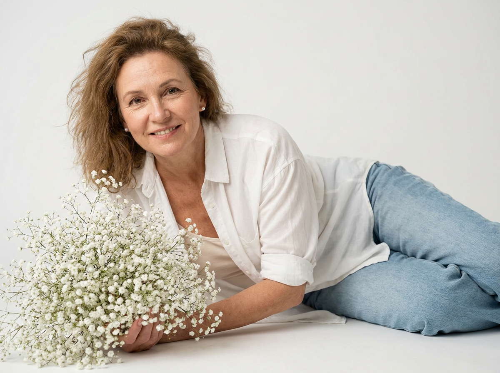
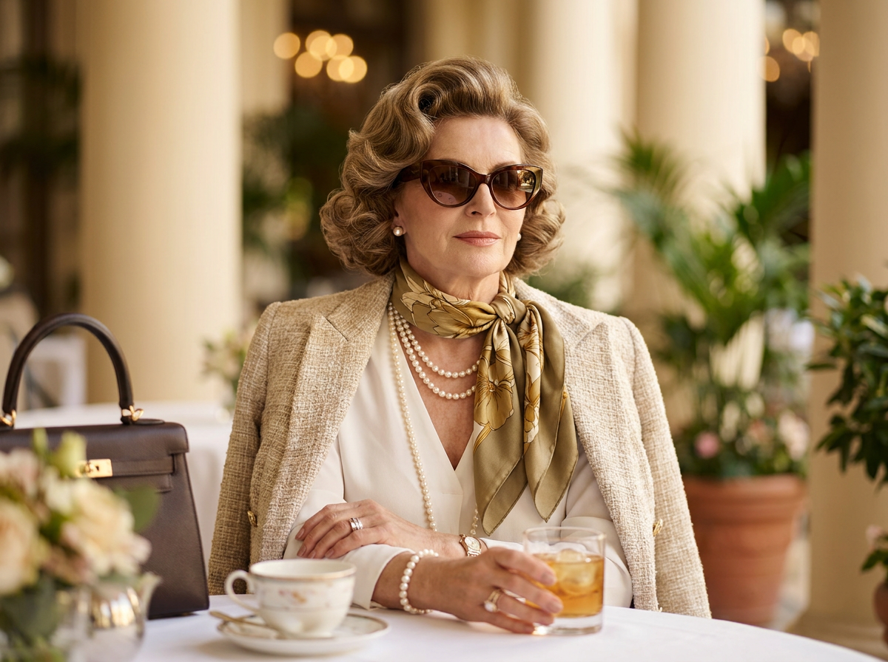
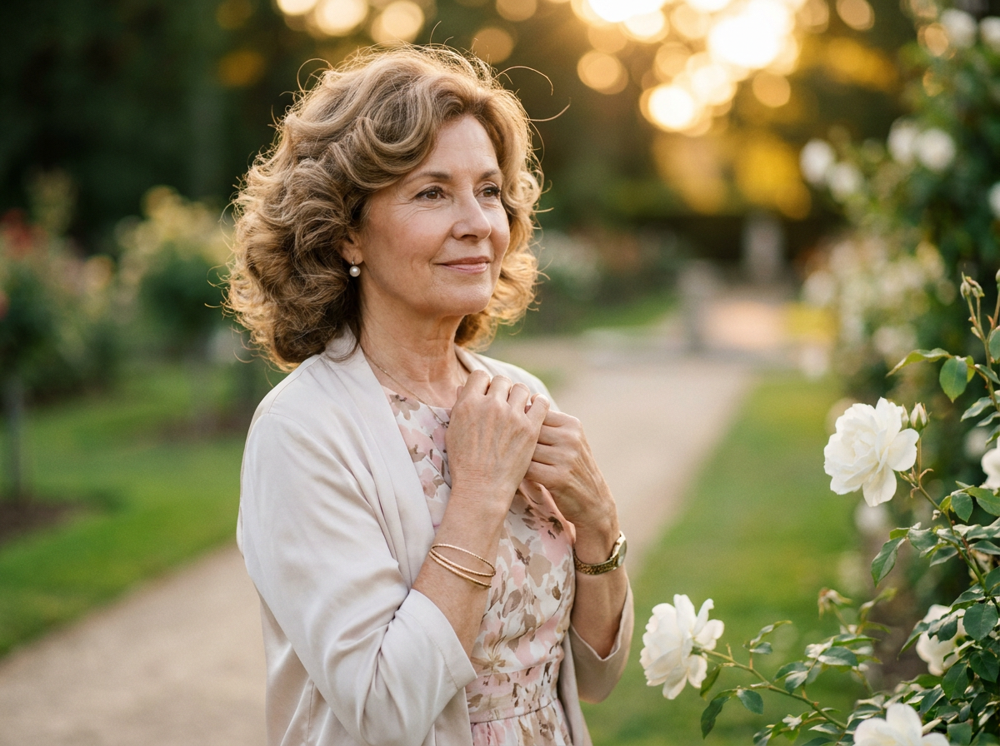
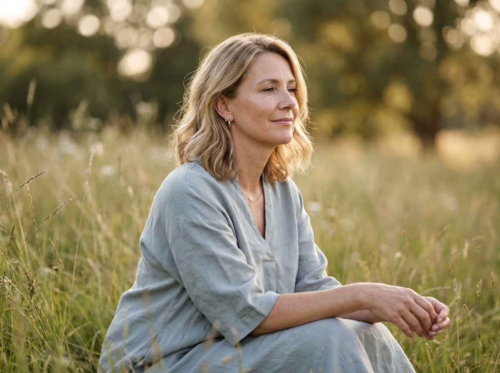
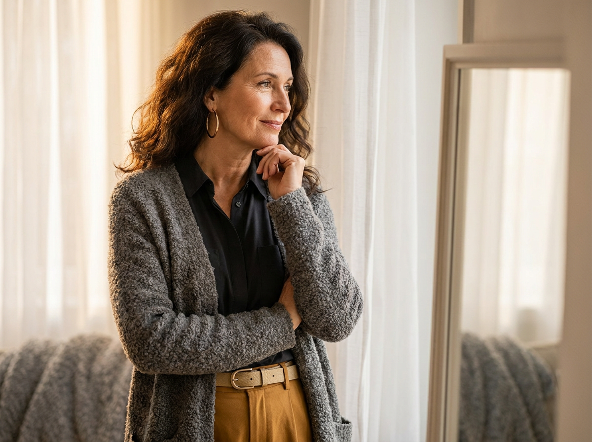
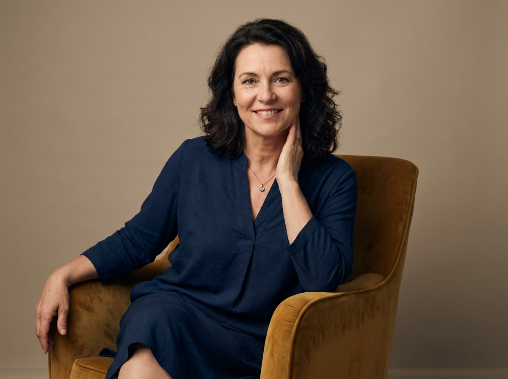
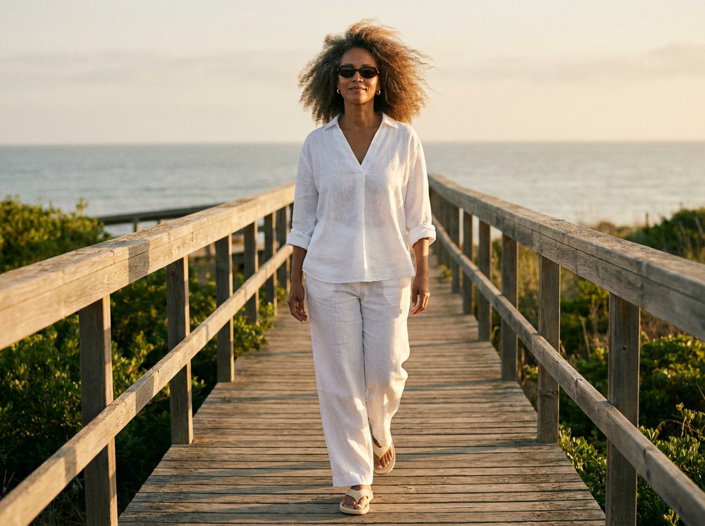
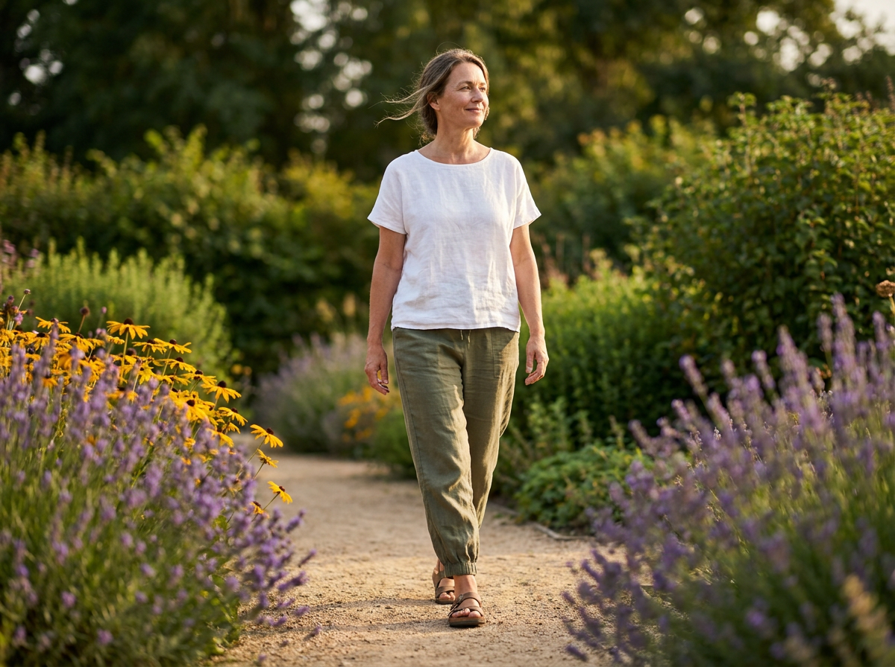
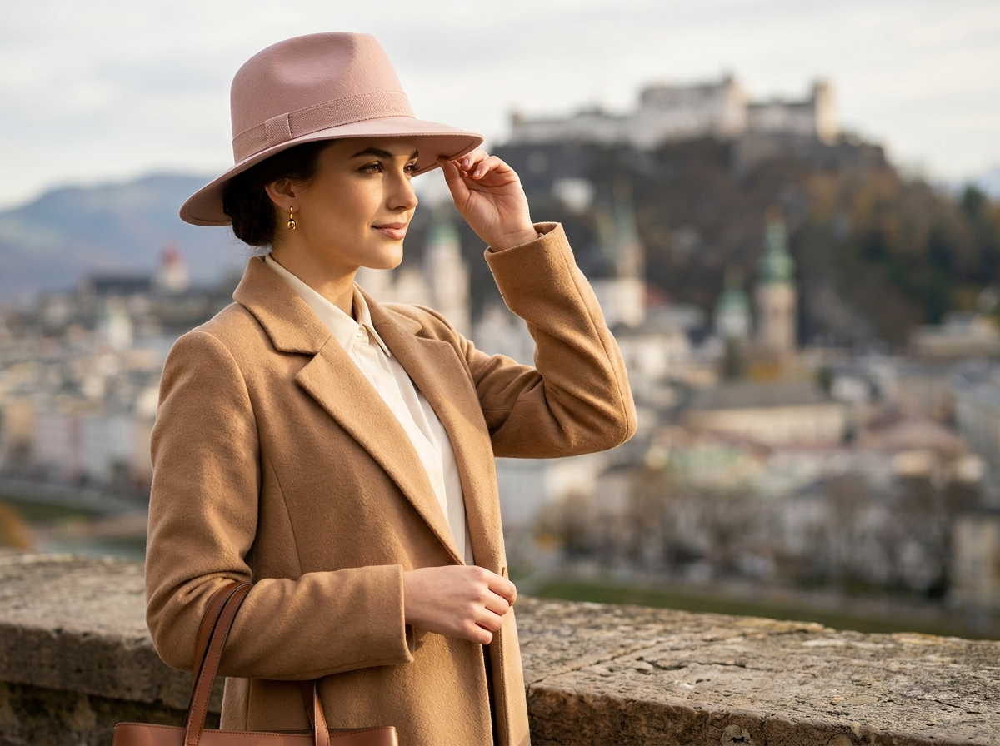
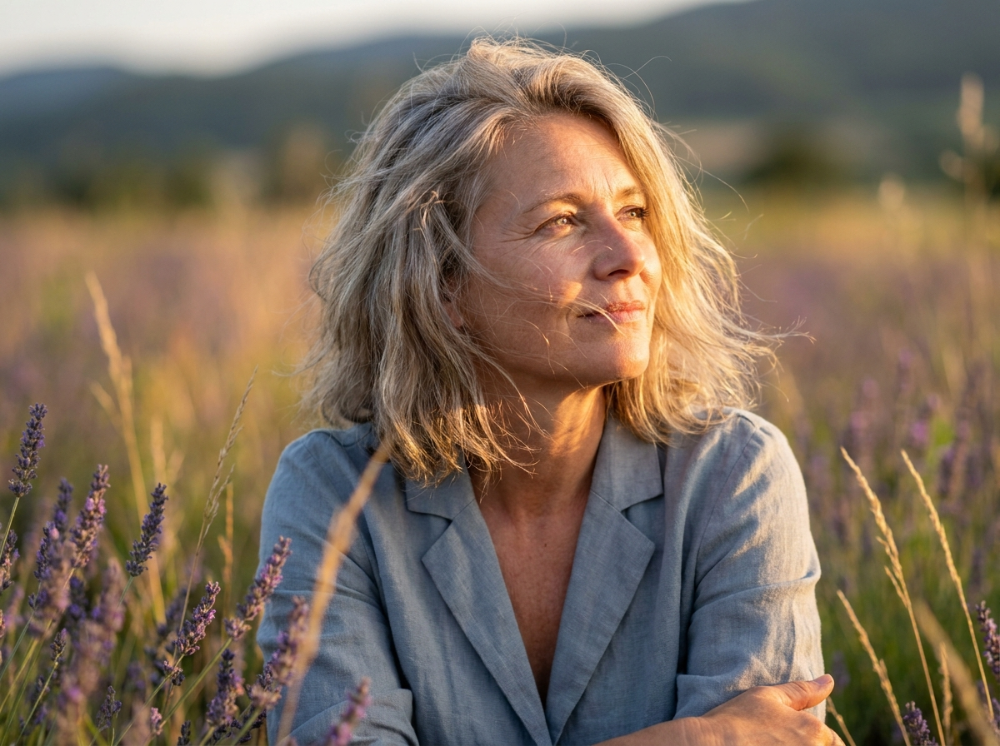

ИИ-Фото для женщин: 10 промптов для нейросети

Красивое женское фото часто требует фотографа, подходящей локации, удачного света и нескольких часов на съёмку. Генерация помогает получить выразительный кадр дома: достаточно описать позу, одежду, настроение и фон, а затем сделать несколько попыток.
В подборке — 10 промптов для разных сценариев: от минималистичного студийного портрета и уютного снимка у окна до прогулки у моря, лавандового поля и европейской набережной. Все описания рассчитаны на фотореалистичный результат и естественную возрастную фактуру.
Как сгенерировать такое фото: пошагово
Нужен снимок анфас при ровном свете, лицо в кадре целиком, без тёмных очков и головных уборов. Разрешение от 1000 пикселей по короткой стороне. Чем чётче исходник, тем точнее модель повторит черты.
Выберите сценарий ниже и нажмите «Копировать» — текст уйдёт в буфер целиком, вместе с командой сохранения внешности. Эта команда стоит первой строкой и отвечает за то, чтобы на выходе было ваше лицо, а не случайное.
Кнопка «Сгенерировать» рядом с каждым промптом открывает модель в новой вкладке. Nano Banana Pro работает с референсом лица — в отличие от моделей, которые генерируют портрет с нуля и узнаваемость теряют.
Промпт — в поле ввода, портрет — через загрузку референса. Порядок значения не имеет, но без референса команда сохранения внешности работать не будет: модели нечего сохранять.
Для сторис и ленты берите 9:16, для превью и обложек — 4:3. Первый результат редко идеален: если поза или свет ушли не туда, поправьте соответствующую часть промпта и запустите заново. Обычно хватает двух-трёх итераций.
10 промптов для генерации
1. Букет в белой студии
Строго сохранить внешность по загруженному референсу: черты лица, пропорции, мимику и текстуру кожи без изменений. Фотореалистичный fine art lifestyle-портрет женщины средних лет в светлой минималистичной студии. Белый или очень светло-серый фон, мягкий рассеянный свет без жёстких теней, вертикальный кадр по пояс или до бёдер. Героиня смещена в правую часть композиции и смотрит прямо в объектив. Она лежит боком на светлой поверхности, корпус немного развёрнут, голова наклонена вправо; в руках держит букет цветов. Поза расслабленная, выражение тёплое, открытая искренняя улыбка. Волосы слегка растрёпаны, с объёмом у корней. Ухоженная кожа с реалистичной текстурой и естественными морщинками, без пластиковой ретуши. Маленькие серьги из перламутра или золота, лёгкий макияж, губы нейтрального оттенка. На ней свободная белая рубашка с расстёгнутым верхом и видимым вырезом, рукава подвернуты. Камера 85 мм, f/2.8, малая глубина резкости, натуральные цвета, детализация 4K.
2. Элегантность в очках

Строго сохранить внешность по загруженному референсу: черты лица, пропорции, мимику и текстуру кожи без изменений. Редакционный fashion-портрет очень взрослой женщины в роскошной светлой локации, напоминающей веранду дорогого отеля. Средний план от груди до талии, вертикальный формат, героиня находится чуть левее центра, корпус развёрнут вправо, голова повернута к камере. Спокойное уверенное выражение, губы расслаблены, взгляд скрыт за крупными солнцезащитными очками. Очки тёмно-коричневые, матовые или полуматовые, формы cat-eye либо слегка округлённой. Волосы ухоженные, объёмные, уложены в мягкие винтажные волны с боковым пробором. Натуральная кожа с возрастной фактурой, без сильной ретуши. Небольшие жемчужные серьги-гвоздики или капли. Светлый костюм: айвори или светло-бежевый твидовый жакет с мягкой фактурой, под ним лаконичный топ в тон. Тёплый дневной свет, дорогая спокойная палитра, фон слегка размыт. Объектив 85 мм, f/2, вертикальный кадр, сверхдетализация ткани и волос, фотореализм.
3. Розы и мягкий взгляд

Строго сохранить внешность по загруженному референсу: черты лица, пропорции, мимику и текстуру кожи без изменений. Фотореалистичный editorial lifestyle-портрет взрослой женщины в ухоженном саду, окружённом цветущими розами. Средний план от груди до талии, вертикальная композиция, героиня расположена ближе к левому центру и немного развёрнута вправо. Она смотрит не прямо в объектив, а чуть правее камеры. Настроение тихое и задумчивое, на лице мягкая полуулыбка. Одна рука поддерживает запястье другой, кисти собраны у груди или плеча; жест утончённый, но естественный. Волосы объёмные, уложены в мягкие локоны с боковым пробором, несколько прядей слегка выбились. Кожа натуральная, видна реалистичная текстура и естественные возрастные особенности. Мягкий макияж, аккуратные брови, естественные губы. В ушах небольшие круглые жемчужины, на шее тонкая цепочка или почти незаметное украшение. Светлая шёлковая блуза с мягкими складками и деликатным блеском. Утренний свет, кремово-розовая палитра сада, фон с плавным боке, объектив 85 мм, f/2.2, детализация 4K.
4. Тихий день на лугу

Строго сохранить внешность по загруженному референсу: черты лица, пропорции, мимику и текстуру кожи без изменений. Фотореалистичный портрет женщины 45–55 лет на открытом лугу. Средний план, вертикальный кадр по грудь или до талии, композиция по центру. Женщина сидит в высокой траве, слегка повернувшись в профиль, и смотрит вправо, вдаль. Лицо расслабленное, спокойная улыбка, глаза мягко прищурены или частично закрыты, настроение мечтательное и умиротворённое. Руки естественно лежат на коленях и корпусе, одна рука может опираться о землю или траву. Лёгкий ветер колышет траву и ткань одежды. Волосы до плеч, мягкие естественные волны, объём и боковой пробор. Солнечный натуральный макияж, тонкие черты, выразительные глаза, ухоженные губы, реалистичная кожа без ретуши. Маленькие золотистые серьги-кольца или лаконичные серьги, допустима тонкая цепочка. На женщине свободное светлое хлопковое или льняное платье голубовато-серого либо светло-мятного оттенка. Тёплый вечерний солнечный свет, объектив 50 мм, f/2.8, лёгкое размытие фона, естественная цветопередача, 4K.
5. У окна с зеркалом

Строго сохранить внешность по загруженному референсу: черты лица, пропорции, мимику и текстуру кожи без изменений. Тёплая фотореалистичная lifestyle-сцена в домашнем интерьере. Взрослая женщина средних лет стоит возле зеркала у окна, рядом колышутся белые полупрозрачные шторы. Средний план по пояс или до груди, героиня занимает левую треть кадра и слегка развёрнута вправо. Она смотрит чуть правее камеры, выражение лица задумчивое, мягкое и спокойное, поза свободная. Волосы объёмные, уложены волнами с художественной небрежностью. Кожа с видимой естественной текстурой, реалистичными морщинками и складками, без чрезмерного сглаживания. Лёгкий натуральный макияж, крупные золотистые круглые серьги в стиле huggies или капель с заметным блеском. На женщине чёрный верх или рубашка с аккуратным воротником и мягкой посадкой, сверху фактурный серо-графитовый кардиган из меланжевой шерсти, твида или букле; волокна ткани хорошо различимы. Мягкий боковой свет из окна, тёплые домашние оттенки, отражение в зеркале естественное, без искажений. Объектив 50 мм, f/2, 4K.
6. Кресло карамельного цвета

Строго сохранить внешность по загруженному референсу: черты лица, пропорции, мимику и текстуру кожи без изменений. Фотореалистичный студийный fine art editorial-портрет женщины средних лет в вертикальном формате. Она сидит в кресле с горчично-золотистой, карамельной бархатистой или велюровой обивкой. Героиня занимает большую часть кадра, композиция по центру с небольшим смещением влево; хорошо видны голова и плечи, нижняя часть тела попадает в кадр частично. Корпус слегка повёрнут к камере. Одна рука согнута и лежит у шеи или виска, словно женщина удобно опирается на ладонь, вторая покоится на бедре либо подлокотнике. Взгляд прямо в объектив, глаза чуть прищурены от мягкого света, выражение уверенное и спокойное, улыбка едва заметная и естественная. Объёмные волосы уложены в аккуратные волны с эффектом messy chic. Натуральная кожа, реалистичные морщинки и возрастные детали, нейтральный макияж, мягкие брови и естественный оттенок губ. Лаконичные украшения, небольшие серьги. Мягкий студийный свет, глубокий золотистый фон кресла, объектив 85 мм, f/2, высокая детализация бархата, волос и кожи, 4K.
7. Прогулка у моря

Строго сохранить внешность по загруженному референсу: черты лица, пропорции, мимику и текстуру кожи без изменений. Фотореалистичное fashion lifestyle-фото взрослой женщины в полный рост на деревянном настиле у моря. Вертикальная композиция, героиня в центре кадра идёт навстречу камере или немного мимо неё, корпус слегка повёрнут. Лицо спокойное и уверенное, на губах лёгкая улыбка. Объёмные волосы развеваются на ветру, отдельные пряди выбиваются естественно. Кожа натуральная, с правдоподобными возрастными деталями и без сильной ретуши. На лице классические солнцезащитные очки с тонкой оправой и затемнёнными коричнево-шоколадными или чёрными линзами, форма слегка овальная. Украшения минимальные: маленькие серьги-пусеты. На женщине свободная белая льняная или хлопковая блуза с V-образным вырезом, планкой на пуговицах и рукавами три четверти, слегка присобранными у локтей; фактура льна заметна. Внизу свободные белые льняные брюки удобной посадки, ткань образует лёгкие складки, обувь простая светлая. Яркий, но мягкий морской дневной свет, горизонт и вода слегка размыты, объектив 35 мм, f/4, полный рост, 4K.
8. Тропа среди цветов

Строго сохранить внешность по загруженному референсу: черты лица, пропорции, мимику и текстуру кожи без изменений. Уличная фотореалистичная фотография в стиле editorial lifestyle: взрослая женщина идёт по песчаной или каменистой садовой тропинке среди цветущих диких растений. Кадр вертикальный, полный рост, героиня расположена по центру с небольшим смещением в сторону. Она делает спокойный уверенный шаг вперёд, корпус чуть развёрнут вправо, лицо направлено вправо, взгляд на уровне горизонта. Выражение умиротворённое, улыбка лёгкая. Волосы немного растрёпаны ветром, у висков выбились отдельные пряди; кожа ухоженная, но натуральная, с реалистичной текстурой и естественными морщинками. Минимальный дневной макияж, аккуратные брови, естественные губы. На женщине свободная белая футболка из хлопка или льна с заметной фактурой ткани, оливковые или хаки льняные брюки высокой посадки, свободные, собранные у щиколоток, с небольшими складками и простым ремнём. Одежда и волосы слегка реагируют на ветер. Естественный солнечный свет, мягкие тени, дорожка уходит в перспективу, объектив 35 мм, f/4, натуральные цвета, 4K.
9. Шляпа у старого замка

Строго сохранить внешность по загруженному референсу: черты лица, пропорции, мимику и текстуру кожи без изменений. Фотореалистичный fashion-портрет молодой женщины на каменной набережной или площадке в европейском городе. На заднем плане в мягком размытии видны замок или крепостные здания с башнями. Вертикальный кадр, композиция по правилу третей: героиня занимает левую или центральную часть, взгляд направлен вправо от камеры. Лицо спокойное и уверенное, выражение смягчает лёгкая полуулыбка. Волосы аккуратно уложены, кожа натуральная, с реалистичной текстурой. Макияж вечерний, но сдержанный: слегка подчеркнутые тушью или тонкой подводкой глаза, нейтральные губы. Небольшие золотистые серьги в форме капель или цветочков, допускается одно минималистичное кольцо. На голове широкополая фетровая шляпа пудрово-розового или терракотово-бежевого оттенка, поля чуть загнуты вверх, фактура материала хорошо видна. На женщине длинное пальто или плащ верблюжьего, карамельного оттенка с аккуратным кроем. Мягкий вечерний свет, объектив 85 мм, f/2.2, кинематографичное боке, детализация 4K.
10. Лаванда и солнечный свет

Строго сохранить внешность по загруженному референсу: черты лица, пропорции, мимику и текстуру кожи без изменений. Фотореалистичный портрет женщины 40–55 лет в лавандовом поле или на цветущем лугу. Вертикальный крупный план по грудь и выше. Женщина стоит или полусидит в траве, смотрит вверх и немного вправо от камеры. Выражение задумчивое и спокойное, улыбка расслабленная, в глазах мягко отражается солнечный свет. Волосы средней длины до плеч, слегка растрёпаны ветром, видны отдельные пряди и естественная текстура. Лицо без глянцевой ретуши, кожа с тонкими реалистичными деталями, аккуратные брови, натуральный макияж, слегка матовые губы. На женщине свободная светло-серая или голубовато-серая рубашка либо мягкая куртка без жёстких элементов, с V-образным или раскрытым воротом. Хлопковая или льняная ткань образует естественные складки, посадка свободная. Плечо и часть руки видны, поза непринуждённая. Тёплое рассеянное солнце, лавандовые и серо-голубые оттенки, лёгкое боке цветов, объектив 85 мм, f/2, высокая детализация волос и кожи, 4K.
Что важно учесть в этом стиле
Фотореалистичный женский портрет держится на трёх вещах: понятной позе, правдоподобном свете и живой фактуре кожи. Если написать только «красивая женщина», нейросеть часто выдаёт рекламное лицо без возраста и характера. Лучше отдельно описывать положение рук, направление взгляда, наклон головы и то, какая часть фигуры попадает в кадр.
Для портрета подойдут 50 или 85 мм, открытая диафрагма f/2–f/2.8 и мягкий боковой свет. Для полного роста удобнее 35 мм и f/4: фигура помещается в кадр, а фон остаётся читаемым. Фразы «естественные морщинки», «реалистичная текстура кожи» и «без чрезмерной ретуши» помогают избежать пластикового эффекта.
Идеи для вариаций
- Замените букет в студии на ветви эвкалипта, пионы или полевые цветы.
- Перенесите сцену у окна в спальню, мастерскую или светлую кухню.
- Попросите вечерний контровой свет вместо дневного и добавьте золотистые блики.
- Смените льняной костюм у моря на кремовый комбинезон или платье-рубашку.
- Добавьте к садовой прогулке плетёную корзину, шёлковый платок или тонкий ремень.
- Для серии кадров используйте один объектив, одинаковую палитру и три разных направления взгляда.
Как собрать свой промпт
Начните с формата и типа съёмки: «вертикальный портрет по грудь», «кадр в полный рост» или «редакционное lifestyle-фото». Затем задайте локацию, положение героини в композиции, позу, направление взгляда и эмоцию. После этого опишите внешность, одежду, аксессуары, свет и фон.
Технические параметры лучше добавлять в конце: объектив 50 или 85 мм, диафрагма f/2–f/4, мягкий дневной свет, малая глубина резкости, разрешение 4K. Не перегружайте запрос десятком взаимоисключающих условий. Если лицо, руки или одежда исказились, меняйте по одному параметру и делайте 3–5 новых попыток.
Ошибки, из-за которых кадр не получается
- Слишком общая поза. Формулировка «женщина красиво сидит» не объясняет, где находятся руки, плечи и ноги.
- Несовместимые планы. Нельзя одновременно требовать крупный портрет по грудь и показать фигуру в полный рост.
- Перегруженная одежда. Слишком много фактур, украшений и деталей повышают риск случайных элементов и артефактов.
- Пластиковая кожа. Уберите слова «идеальная» и «безупречная», добавьте естественную текстуру и умеренную ретушь.
- Неправильный объектив. Для полного роста 85 мм может обрезать фигуру, а для близкого портрета 24 мм часто искажает лицо.
- Неуказанный свет. Без направления и характера освещения лицо может оказаться плоским или получить жёсткие тени.
- Случайный фон. Опишите, что должно быть вдалеке, насколько сильно оно размыто и где находится главный источник света.
Частые вопросы
Как сделать такое ИИ-фото бесплатно?
Для первых попыток подойдут Kandinsky и Шедеврум: обычно они позволяют генерировать изображения без оплаты, но могут ограничивать число запусков, скорость и разрешение. В Krea AI и Arena.ai можно протестировать генерацию в бесплатном режиме, однако доступные модели, очередь и функции меняются. Загрузка референса есть не во всех режимах и может работать слабее, чем текстовый запрос: лицо, одежда и поза иногда меняются. Перед публикацией проверьте актуальные условия сервиса и права на исходную фотографию.
Как сохранить лицо на серии снимков?
Используйте один и тот же референс, одинаковое описание внешности и близкие параметры кадра. Не меняйте сразу локацию, возраст, причёску и макияж. Если сервис поддерживает силу референса или image-to-image, начните со среднего значения и сделайте несколько вариантов.
Как убрать лишние пальцы и странные украшения?
Сократите количество видимых рук и кистей в сцене, опишите положение пальцев и добавьте негативные указания: «без лишних пальцев, без деформированных кистей, без двойных украшений». Проблемный участок можно исправить отдельной перегенерацией или дорисовкой.
Какой формат выбрать для аватарки и соцсетей?
Для сторис и вертикальных публикаций берите соотношение 4:5 или 9:16. Для аватарки удобнее квадрат 1:1, но оставляйте запас вокруг головы, чтобы лицо не обрезалось. Сначала генерируйте в хорошем разрешении, затем кадрируйте под конкретную площадку.